👑
Benson
Pet of the Month at The Gunther, Baltimore · June 2026
Approximately 24 pounds of opinion in a small, dignified package.
Pet of the Month
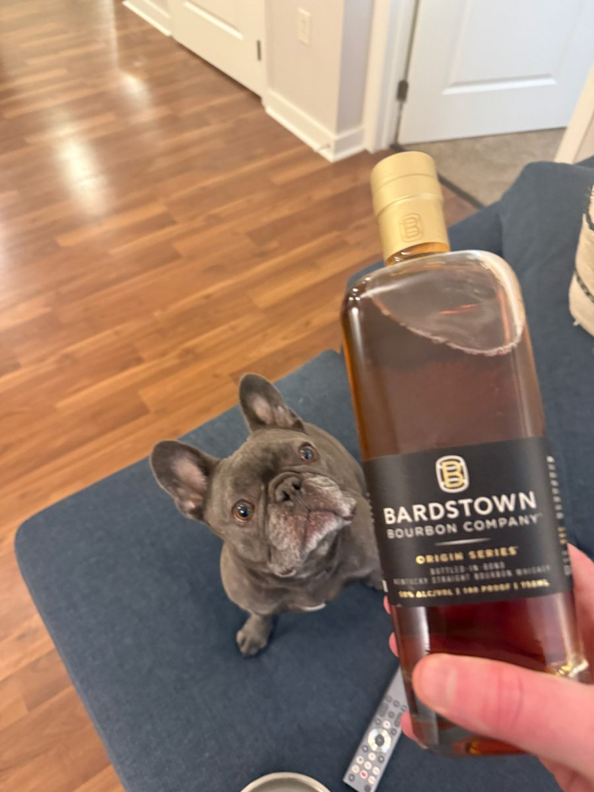
"I'd like to make a toast."Sophisticated palate
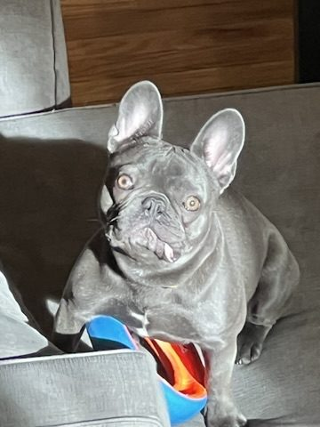
Wait. You SAW that?Caught in the act
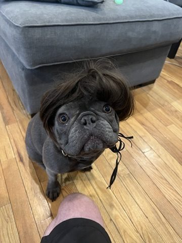
First day at the office. Going great.Power look
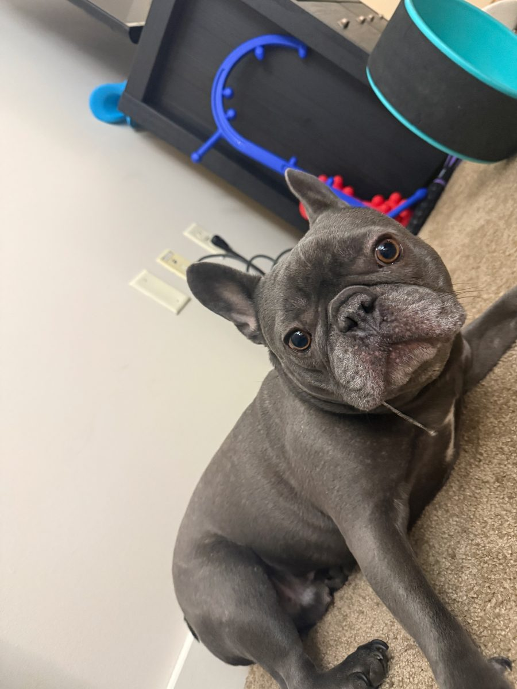
Did you say... walk?Vocabulary of 4
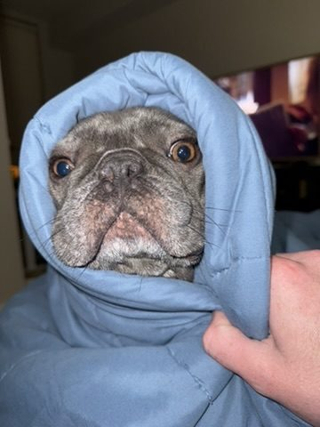
Reporting live from inside the burrito.Field correspondent
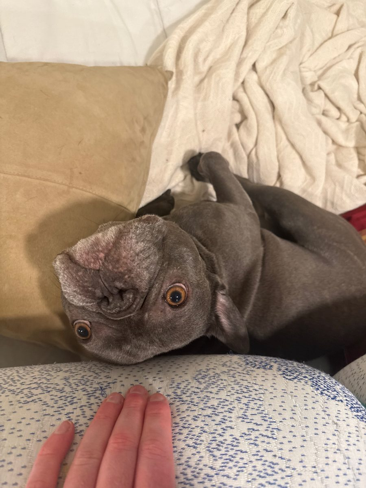
"This is fine. Everything is fine."Emotional range
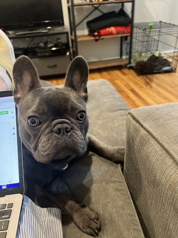
Code review, in progress.Working from home
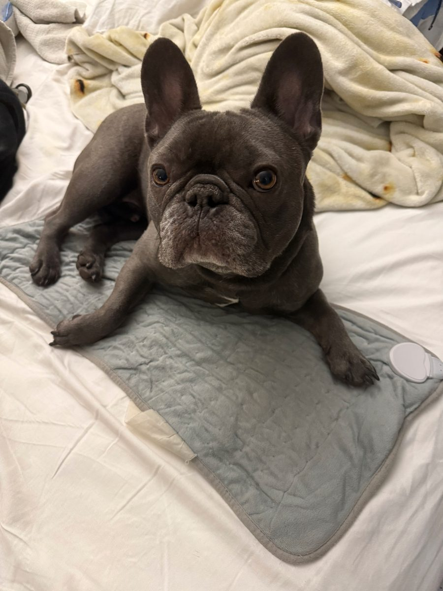
The throne is heated. Bow accordingly.Lifestyle creep
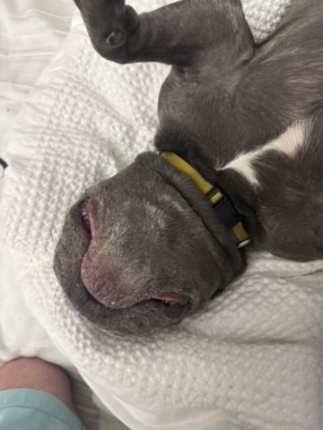
Do not perceive me. I am simply ham.Maximum potato
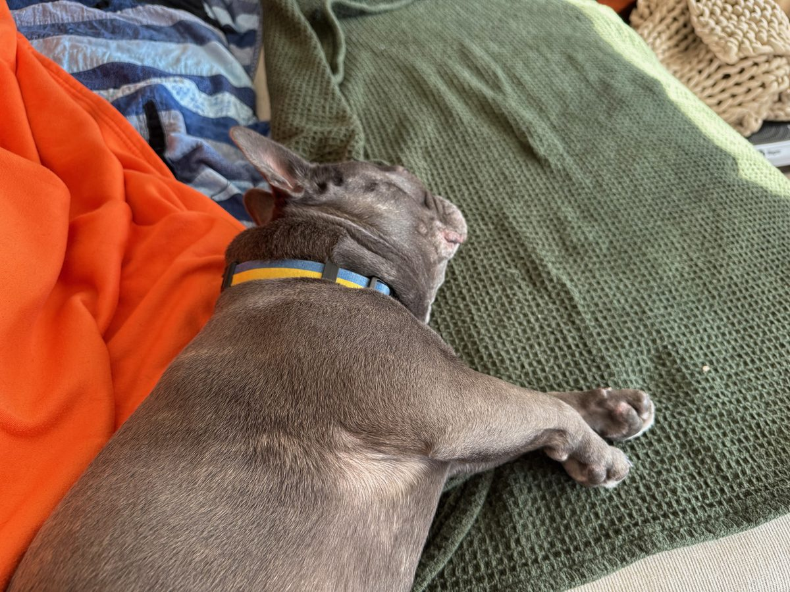
Battery: 0%. Do not disturb.World-class sploot
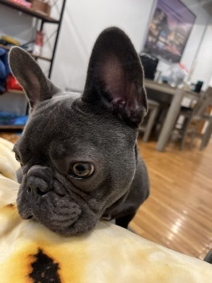
All ears. Mostly the one.Reception is great
Conducting important sidewalk forensics.Field work
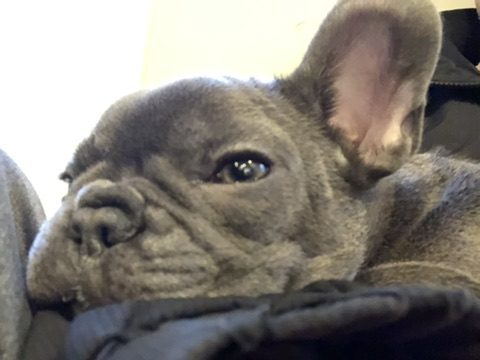
Witness protection program.Identity protected
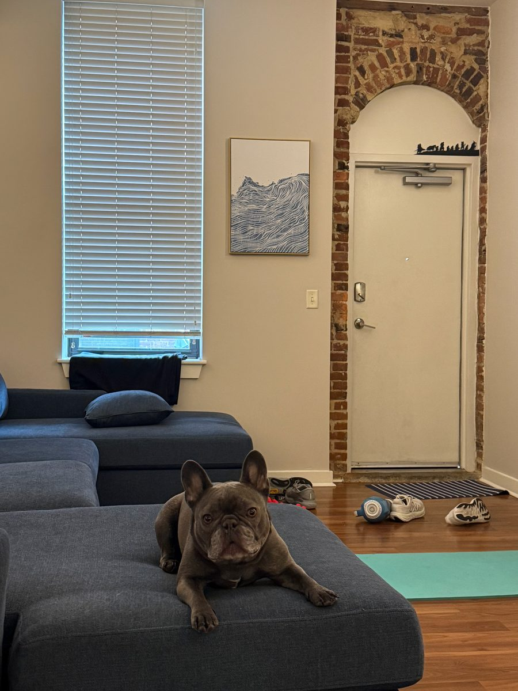
Welcome to Apt. 134. Tour starts at 7. Tip your guide.Real estate mogul
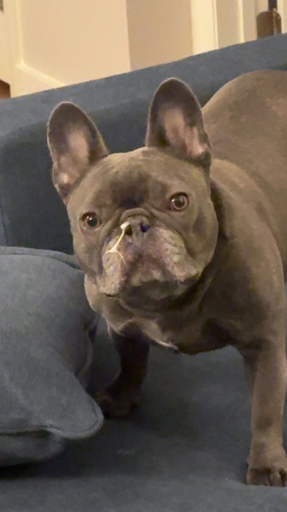
Yes I see you. Yes I am judging.The verdict